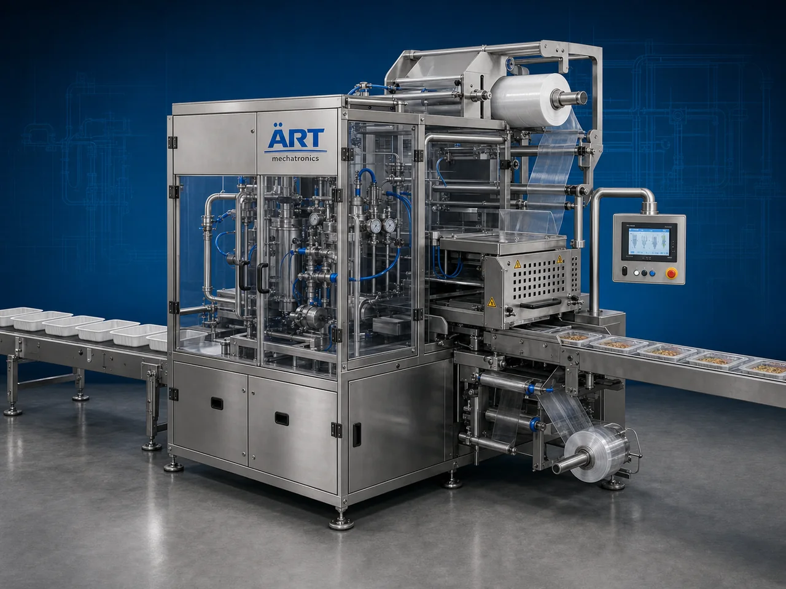

Tray Sealing Machine (Modified Atmosphere Packaging System)
A MAP Tray Sealing Machine, also known as a Modified Atmosphere Packaging Machine, MAP Tray Sealer, Vacuum Gas Flushing Tray Sealer, or Automatic Tray Sealing System, is an advanced industrial food packaging solution designed for automatic tray feeding, product loading, vacuum sealing, gas flushing, heat sealing, coding, and high-speed hygienic packaging operations for meat products, seafood, ready meals, fruits, vegetables, dairy products, frozen foods, and retail food packaging applications.

About the Map Tray Sealing
MAP tray sealing systems are widely used for:
- Meat tray MAP packaging
- Seafood tray sealing
- Ready meal packaging
- Fresh food tray packaging
- Vacuum gas flushing packaging
- Frozen food tray sealing
- Retail supermarket packaging
- Hygienic food packaging operations
The machine improves:
- Product freshness
- Shelf life extension
- Oxygen reduction inside packaging
- Leakage prevention
- Retail presentation quality
- Production efficiency
- Packaging consistency
Industrial MAP tray sealing machines use:
- Automatic tray feeding systems
- Servo synchronized sealing systems
- PLC and HMI automation controls
- Vacuum and gas flushing systems
- Precision heat sealing mechanisms
to automatically seal trays using modified atmosphere packaging technology for superior freshness protection and high production efficiency.
MAP tray sealing machines are widely used in industries such as:
Meat processing industries Seafood industries Ready meal industries Frozen food industries Fruit & vegetable industries Dairy industries Food processing industries Retail food packaging industries
where hygienic packaging, freshness retention, and long shelf life are essential.
The machine is highly suitable for:
- Fresh meat tray packaging
- Seafood MAP sealing
- Ready meal packaging
- Fresh produce tray sealing
- Chilled food packaging
- Supermarket retail packaging
ART Mechatronics offers high-performance MAP tray sealing machines, engineered for continuous industrial operation, hygienic food packaging performance, accurate gas flushing control, and reliable long-term packaging automation.
Working Principle of Map Tray Sealing Machine
- 1. Empty Tray Feeding Empty trays are automatically fed into packaging line through synchronized indexing systems.
- 2. Product Loading Process Products are automatically or manually loaded into trays before sealing operation.
Servo synchronization ensures accurate tray movement and smooth product handling.
- 3. Vacuum & Gas Flushing Operation Machine automatically removes oxygen and injects modified atmosphere gases such as: ✔ Nitrogen ✔ Carbon dioxide ✔ Oxygen-controlled gas mixtures
to preserve product freshness and extend shelf life.
- 4. Tray Sealing Process Machine performs: Heat sealing Vacuum sealing MAP gas flushing Leak-proof tray sealing Skin packaging (optional)
for hygienic and freshness-protected packaging quality.
- 5. Coding & Inspection Integration Optional systems include: Batch coding Date printing QR code printing Vision inspection Leak testing systems
- 6. Finished Tray Discharge Finished trays discharged automatically for: Cartoning Case packing Retail distribution Cold chain logistics
Types of Map Tray Sealing Machines
- 1. Vacuum MAP Tray Sealer Designed for: ✔ Vacuum-sealed food packaging applications
- 2. Gas Flushing Tray Packaging Machine Suitable for: ✔ Oxygen-controlled freshness packaging systems
- 3. Ready Meal MAP Packaging Machine Uses: ✔ Ready-to-eat and convenience food packaging systems
- 4. Skin Packaging Tray Sealer Designed for: ✔ Premium retail meat and seafood packaging systems
- 5. Servo Driven MAP Tray Sealer Suitable for: ✔ Precision high-speed sealing operations
- 6. Fully Automatic MAP Packaging System Designed for: ✔ Complete industrial food packaging automation lines
Industries Using Map Tray Sealing Machines
🥩 Meat Processing Industry Fresh meat, processed meat, and hygienic MAP meat tray packaging systems. 🦐 Seafood Industry Seafood products, fish trays, and freshness-protected seafood packaging systems. 🍱 Ready Meal Industry Ready-to-eat meals, frozen foods, and convenience food tray packaging systems. 🥦 Fruit & Vegetable Industry Fresh produce, cut vegetables, and retail freshness packaging systems. 🥛 Dairy Industry Cheese products, dairy snacks, and chilled food tray packaging systems. 🛒 Retail Food Packaging Industry Supermarket food products and premium retail tray packaging systems.
Features & Advantages
- High-speed automatic MAP tray sealing operation
- Vacuum and gas flushing freshness preservation systems
- Hygienic and leak-proof food packaging quality
- PLC and servo automation control systems
- Improves food freshness and shelf life significantly
- Reduces product wastage and spoilage
- Supports multiple tray sizes and food formats
- Reliable long-term industrial performance
- Smooth and continuous packaging operation
Technical Highlights
Machine Type: Automatic MAP tray sealing machine Industrial food tray packaging system Modified atmosphere packaging machine Packaging Material: PET trays PP trays Food-grade trays Aluminium trays Sealing Integration: Vacuum sealing systems Gas flushing systems Heat sealing systems Skin packaging systems Features: PLC control system Servo synchronization Touchscreen HMI Batch coding integration Automatic tray feeding systems Applications: Meat products Seafood products Ready meals Frozen foods Fresh produce Automation: Semi-automatic Fully automatic industrial systems
Turnkey Map Packaging Solutions
ART Mechatronics offers: Complete MAP tray sealing systems Automatic gas flushing packaging solutions Packaging automation integration systems Conveyor synchronization systems Installation & commissioning After-sales service & AMC
Why Choose Art Mechatronics
Expertise in industrial packaging and automation systems Customized MAP packaging solutions for multiple industries High-performance and hygienic packaging technology Advanced PLC and servo automation systems Proven industrial food packaging performance across sectors
Applications
Meat Processing Plants Seafood Packaging Industries Ready Meal Manufacturing Facilities Frozen Food Industries Fruit & Vegetable Packaging Units Retail Food Packaging Plants
Get pricing & specs for the Map Tray Sealing
Share the product, target capacity, current process and plant location. These details help our engineers discuss the right machine or line configuration.
One partner, from design to start-up
ART Mechatronics designs, manufactures, installs and commissions your Map Tray Sealing solution with regional presence in India, UAE and Thailand.